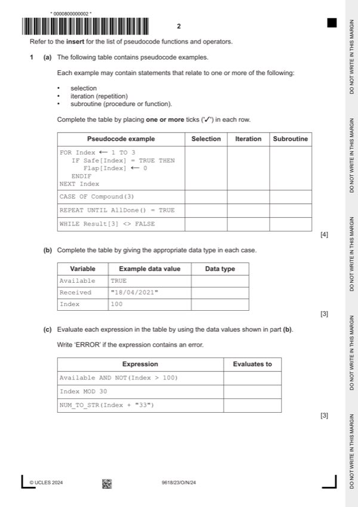

Question 1

Original paper page 2
Part 1(a) — solution
Answer: 4
- IF Safe[Index] = TRUE THEN
- REPEAT UNTIL AllDone() = TRUE
Mark points
- IF Safe[Index] = TRUE THEN
- REPEAT UNTIL AllDone() = TRUE
Part 1(b) — solution
Answer: 3
3
Variable Example data value Data type
Available TRUE BOOLEAN
Received "18/04/2021" STRING
Index 100 INTEGER
One mark per row
Mark points
- Correct result: 3
Part 1(c) — solution
Answer: 3
3
Expression Evaluates to
Available AND NOT(Index > 100) TRUE
Index MOD 30 10
NUM_TO_STR(Index + "33") ERROR
One mark per row
University Press & Assessment 2024 Page 4 of 14
9618/23 Cambridge International AS & A Level – Mark Scheme October/November
PUBLISHED 2024
Mark points
- Correct result: 3